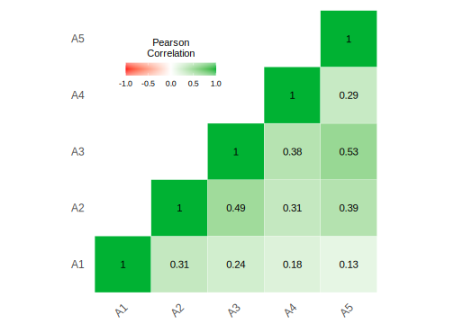

Chapter 11 Data Preparation and Analyses
11.1 Chapter overview
This section is dedicated to showing you how to get your data that you have collected from Google into jamovi, and then prepared in such a way that you can begin Writing Assignment #2 (in section 14.5).
This section will proceed as follows:
- Exporting your data from Google Forms
- Importing your data into jamovi
- Cleaning up the data in jamovi so that only your pertinent variables remain
- Filtering out observations that should not be analyzed
- Reverse-scoring data any variables that need this transformation
- Calculating z-scores (if necessary)
- Calculating Cronbach’s Alpha and analyzing your outcome variables
- Creating a composite variable from your outcome variables
11.2 Exporting data from Google Forms
This step is extremely easy. And it is really just a particular version of what we already covered in sections 2.3 and 2.8.3 earlier in the manual.
When you are finished with data collection and you open your Google Form, you will see two tabs at the top: Questions and Responses (with a number next to it). Select Responses. See Figure 11.1 below.
Figure 11.1: Example of tabs available upon opening your Google Form (assuming it has data; the number will vary depending on how much data you have collected).
You will then see an option that says Accepting responses. click the button next to that. This will prevent further participants from adding data to your survey.103
Figure 11.2: How to halt all future responses in Google Forms
From here, there is an option to download the data as a .csv file directly by clicking the three vertical dots. So click (\(\vdots\)) > Download responses (.csv). This will place a compressed .zip folder on your computer.
You will then need to unzip it. On a Mac, simply double-click it and it will unzip it in the same location. On Windows 10, right-click it and choose Extract All and choose an appropriate destination and click Extract at the bottom. Note down where the extracted directory is.
That’s it.
11.3 Importing the data into jamovi
Start jamovi and click (\(\equiv\)) > Import. Navigate to the directory with the .csv file and double click the file.
Save your imported data as a jamovi file with the following name: MainData_[YOUR.GROUP.ID].jmv (e.g., MainData_905C.jmv). This is the file that you will ultimately upload (as a group) to the Google Folder assigned to you, and refer to when you notify your instructor that you have done so (in Canvas, under Lab: BDDO > Data). Only one person from the group needs to upload this.
But first, there are some changes you need to make.
11.4 Cleaning up the data
11.4.1 Renaming variables
First, Google Forms just exported the questions as your variable names. This is not convenient since they are very long, and will clutter up any statistical output, figure, or table you subsequently produce.
Age or Gender.
Double-click the header at the top of the relevant column in jamovi. This will open up the DATA VARIABLE window, where you can manipulate things like the levels of the variable, the name, the descriptions, etc. In this case, you are going to manipulate the variable name and description.
First read the variable name at the top and think of a reasonable name for it. Don’t type over the variable name yet. Just think of a reasonable, shorter replacement and write it down. A reasonable, shorter replacement name is one that is transparent enough for figures and tables, but not so long that it creates space problems for the same elements (i.e., figures and tables). For instance, a variable with the original name of How satisfied are you with the amount of sleep you get each night could be changed to Nightly Sleep Satisfaction.
Next, select the entire variable name. Then either click CTRL-X or go to Edit > Cut. The long name should disappear from the top box. Now read the caution below:
So the very next thing you must do is re-name the variable in the top box. Use the variable name you wrote down (see above).
Now, place the mouse in the Description box (make sure the cursor is blinking inside there) and click CTRL-V, or Edit > Paste. Now the long name of the variable is in the Description. The description in jamovi is mostly for researcher reference. It doesn’t appear anywhere in any analyses, tables, or figures.
11.4.2 Removing variables
Next, remove the A, B, and C columns as demonstrated earlier in the manual in section 2.8.3 and Figure 2.28.
In the same way, you will also want to delete the Timestamp variable that Google Forms creates that you do not need.
Assuming you used the Google Form template, there was a question at the beginning asking participants whether they wanted to continue. If they chose yes, then their data were recorded. If they chose no, they were bumped out of the survey and thanked, but their data was not recorded.
What this means is that for all or most of you, the next variable is useless [i.e., I would like to continue with this survey (by clicking “No”, you will exit the survey)]. If the survey worked right, the column should have only yes responses, and no no responses since only people who responded yes even have data there. So you can delete this variable too.
However, this agreement to participate should not be confused with the variable near the end of the survey (to the far right in the spreadsheet), where participants indicated whether they wanted their data analyzed (i.e., Do you give permission for the data you just provided to be used and analyzed for research purposes?). This is different. This variable was collected after the data had undergone recording. It is an indication whether or not the participant is comfortable with you analyzing the data. If the response was no, then you need to filter out that response.
This is the topic of section 11.5.1 below. But first, you may need to adjust some variables.
11.4.3 Adjusting variables
When jamovi imports data from a delimited text file, sometimes it gets the variable type wrong.
For instance, when we imported some data from a past project in this class, jamovi imported Age as a nominal variable. If this happened to you, just double-click on Age and click the Continuous box. That will take care of it.
jamovi may have done this with your Likert data as well, as it did in our case. That data should be Continuous (Data type: Integer). Do that for all variables that were imported as nominal, but should be continuous.
11.5 Final steps before analysis
11.5.1 Filtering data
Sometimes you need to filter data out for whatever reason. It could be that some of your observations have been identified as outliers. or it could be that the data was somehow corrupted, or you identified the responses as being somehow illegitimate. Presumably, none of those reasons will come up in your study.
However, if the participant indicated that they did not want their data analyzed, then you very much need to filter that data out. This is an issue of informed consent.
We covered how to do this earlier in section 2.5.2. You can refer back to that section, and filter out any such variables.
But in short this is easy to do. The filter function is located under the Data tab. Once there, we just clicked the icon labeled Filters (at the upper-right). The icon looks like a funnel, half full of liquid. There’s a box there labeled ROW FILTERS.
Assuming you changed the variable name from Do you give permission for the data you just provided to be used and analyzed for research purposes? to something like Consent, you can type in the following in the box under Filter 1, labeled \(f_{x}\):
Consent == ‘Yes’
The double equals sign is the way that the underlying programming language, R, wants you to ask yes/no questions. Basically, Consent == ‘Yes’ translates to “Is the value in this row under the column ‘Consent’ the same as ‘Yes’?”
Also note that if you have a space between a two-word variable name (e.g., Informed Consent), you will need to surround the whole variable name with single back-ticks. This is how R can deal with spaces within variables. You can see this below in Figure 11.3. On your keyboard, the backtick is located just below the tilde (~), which is in turn is located just below the Escape key in the upper-left corner.

Figure 11.3: Surround any variable with spaces in it with backticks.
11.5.2 Reverse-scoring
For your particular assignments, we have required that you collect three, related outcome variables that, together, form a single construct in the form of a composite variable. Thus, you will be adding or averaging these variables together.
But you will need to take care of a few things before doing so. Some may not apply to you, but others will.
You might have intentionally or inadvertently included a reverse-scored item. That means that the response scale is reversed compared to the other items. For example, the responses to the statement “I am disappointed with my cumulative grade-point average” (1 - Strongly disagree <—> 5 - Strongly agree) would be reverse-scored relative to the responses to the statement “I am generally happy with my GPA this semester” (1 - Strongly disagree <—> 5 - Strongly agree). Someone who was happy with both would respond low to the first statement and high to the second statement.
There is a simple formula for reverse scoring. If your variable is x, then the formula is \(max(x)+1-x\). That is, take the maximum possible value of x, add one to it, and subtract the value of x for that cell in the spreadsheet.
In jamovi, you click the Data tab, and find a blank column on the right-hand side of the spreadsheet, and double-click the header. You will see several options, but you should click NEW COMPUTED VARIABLE.
You should come up with a new name for the variable that relates to the original. Thus, if the original had been Aggression1, the new one could be Aggression1R (with an R to indicate reversed). We have done one in plain English here with spaces (thereby requiring backticks). Here we are reverse-scoring Nightly Sleep Satisfaction into Nightly Sleep Satisfaction (reversed).
The scale was a 1-5 Likert scale, so we added 1 to 5, giving us 6. We then subtracted Nightly Sleep Satisfaction from 6. See Figure 11.4 below.

Figure 11.4: Reverse scoring by subtracting a variable from its maximum value plus one (Note the use of backticks around the original variable, which had spaces in the name).
In the figure, you can also compare the scores on the Nightly Sleep Satisfaction variable (at the lower left) with the new values for Nightly Sleep Satisfaction (reversed) variable (at the lower right). The pattern is as follows:
\(5\to1\)
\(4\to2\)
\(3\to3\)
\(2\to4\)
\(1\to5\)
Here is a more detailed link that describes reverse-scoring and how to carry it out in jamovi.
11.5.3 Calculating z-scores
Some of you may have these variables on different scales. Perhaps one of your questions is on a 1-to-5 Likert scale, but another is a count. If this is the case, then you will need to convert all the variables into z-scores before analyzing them. This was covered in a previous chapter in section 2.5.1.3.2, but in a very different context. We will provide a simple example here.
We artificially created three variables for a data set of 23 observations. The first variable, Lk1to7 is contains random values between 1 and 7. The second variable Lk1to5 is the same, but only varies between 1 and 5. The third, CountUpTo40 varies between 1 and 40. Let’s say that it’s a count variable. These are shown in 11.5 below.
Figure 11.5: An artificial data set with a variable that ranges between 1 and 7 (Lk1to7), one that varies between 1 and 5 (Lk1to5), and one that varies between 1 and 40 (CountUpTo40).
To put these on the same scale, you need to create a new variable for each of the old ones, and apply a z-transformation, converting them into z-scores (standard-deviation units) around a new mean of zero.
As you did for the reverse-scored items (section 11.5.2), double-click a blank header above any of the blank columns, and choose NEW COMPUTED VARIABLE. Type in a new variable name that represents the particular z-score, like Lk1to7_z.
Click the little down arrow just to the right of the \(f_x\) symbol, and scroll down until you find Z and double click it. You’ll now see \(=Z()\) in the box to the right of \(f_x\). Inside those parentheses, type the name of the old variable, Lk1to7.
Press
We completed this for the other two variables as well. You can see the results below in Figure 11.6.

Figure 11.6: The results of transforming those variables into z-scores (identified by having a _z extension).
Though it is not as ideal as having all variables on the same scale, you can indeed average or sum these values together.
It is also important to keep in mind that the scale has changed irredeemably. Your mean value will now be zero. You will need to be able to interpret things this way in the Results and subsequent Discussion sections.
11.5.4 Calculating Cronbach’s alpha
Assuming you have taken care of any conversion of your scores to z-scores (if necessary), you will then need to carry out an analysis of how well your individual questions are working together. This is done through an analysis of Cronbach’s Alpha. If your analysis shows that you can use all three variables, then you use all three. Don’t be surprised, however, if one of your variables does not act like the others. In this case, you may want to consider analyzing that variable separately.
To illustrate this, we will simply use a dataset called Personality Questionnaire: Ch15 - Personality data sample 3 (bfi_sample3) [located at the very bottom] from the datasets associated with Navarro & Foxcroft (2019). In fact, this is the dataset they use to illustrate the same (pp. 461-463).
Simply go to (\(\equiv\)) > Open > lsj-data > Personality Questionnaire: Ch15 - Personality data sample 3. This dataset is a sample of people who took a Big-5 Personality test. The variables A1-A5 represent Agreeableness, but A1 is reverse-scored.
Luckily, we do not need to reverse-score this ourselves. jamovi’s procedure for calculating Cronbach’s Alpha contains a mechanism within it to deal with reverse-scored items.
One thing you may have to do, however, is convert the A1 through A5 variables from nominal variables to continuous variables. For whatever reason, jamovi is reading these variables as nominal variables when they are, in fact, continuous.
Under the Data tab, just double-click the variable and change the Measure type from Nominal to Continuous. Do this for variables A1 to A5 (don’t bother with the other variables since we are not working with them at this time).
When you have the data, click the Analyses tab, and choose Factor.104 From here select Reliability Analysis.
Move variables A1-A5 to the Items box. Then look down below and click the window labeled Reverse Scaled Items. In that box (labeled Normal Scaled Items), select A1 and move it over to the box labeled Reverse Scaled Items.
Also, under Additional Options, click Correlation heatmap.
The arrangement of variables should look as they do in Figure 11.7 below.
Figure 11.7: The arrangement of variables for Cronbach’s Alpha using the bfi_sample3 dataset from Navarro & Foxcroft (2019)
The result of the analysis should looks as follows:105
RELIABILITY ANALYSIS
Scale Reliability Statistics
────────────────────────────
Cronbach's α
────────────────────────────
scale 0.7010436
────────────────────────────
Item Reliability Statistics
───────────────────────────
Cronbach's α
───────────────────────────
A1 ᵃ 0.7220262
A2 0.6185412
A3 0.5878971
A4 0.6760271
A5 0.6448210
───────────────────────────
ᵃ reverse scaled item
Normally what you are looking for is a relatively high Cronbach’s Alpha, along with any items that result in a significant increase in Cronbach’s Alpha if it is removed.
In this case, the removal of A1 would result in a higher Cronbach’s Alpha than the removal of any other item, but the increase is not really significant enough to warrant removal from analysis.
Had there been an item that was odd compared to the others, then you might have considered removing it and analyzing it separately.
Also notice in the heatmap (a correlation matrix with shades of green representing strength of correlation [Pearson’s r]), that all of the correlations were pretty weak to moderate (\(r_{A1.A5}\) = .13 to \(r_{A3.A5}\) = .53, respectively). This merely suggests that the construct is not unidimensional.
The final stage is next.
11.5.5 Creating a composite variable
To create a new variable we simply sum or average them together. We can work with the same bfi_sample3 data from above to do this. We will need to reverse-score A1 first (see section 11.5.2 above.
Using the same procedure as we did above for creating reversed scores (section 11.5.2) and creating z-scores (section 11.5.3), we again clicked the header above a blank column and chose NEW COMPUTED VARIABLE.
Here, we chose to sum together A1R (reversed) and A2-A5.106 We did this by choosing the function SUM from the \(f_x\) menu. Then, inside the parentheses of SUM(), we placed all the variables we needed, separated by commas. See Figure 11.8 below for a visualization of what we did.
Figure 11.8: Calculating the sum of A2-A5 and A1R (reversed)
And that is it. Once you reach this stage, you have your composite variable and you are ready to upload the jamovi file to your group’s Google Folder and let your TA know (through the assignment in Canvas).
References
This step isn’t actually required, but it can reduce confusion down the line, as one of your group-mates may decide to download more current data without you knowing, thereby giving you two or more datasets.↩︎
Cronbach’s Alpha is often carried out in conjunction with something called Factor Analysis, which you are free to read about in Chapter 15 of Navarro & Foxcroft (2019)↩︎
Recall that the output below (and further down) was generated from the jmv package in R, and will therefore be rounded to more decimal places than the native output in jamovi.↩︎
We could also average them since they’re on the same scale. The result is the same.↩︎